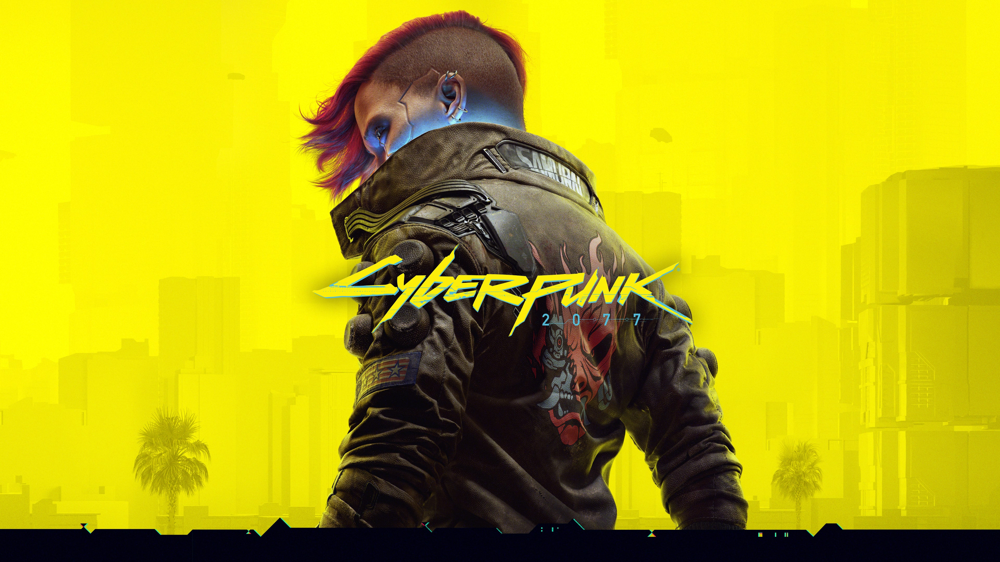

Bienvenue sur FanTheories
Découvrez les théories les plus populaires autour des jeux vidéo. Explorez les mystères, les personnages et les secrets cachés imaginés par les communautés de joueurs.
Bibliothèque des jeux

Minecraft

Poppy Playtime

Cyberpunk 2077

Undertale